Thank you
At first we would like to say thank you for choosing Master Slider WordPress Plugin. In this documentation you will find everything you need to use Master Slider WordPress (free version).
If you have any questions which are not covered in this documentation, please take a look at support section.
About the Master Slider WordPress
Master Slider WordPress is a powerful and yet easy to use image and content slider for WordPress, with super smooth hardware accelerated transitions. It supports touch navigation with pure swipe gesture that you have never experienced before. It’s a truly responsive and device friendly slider which works perfect in all major devices.
Automatic installation (easiest way)
To do an automatic install of Master Slider, log in to your WordPress dashboard, navigate to the Plugins menu and click Add New.
In the search field type Master Slider and click Search Plugins. Once you have found it you can install it by simply clicking "Install Now".
Manual Installation
Installing using WordPress Dashboard
- Download
master-slider.zip from Master Slider plugin page on WordPress.org
- Navigate to the
Add New in the plugins dashboard
- Navigate to the
Upload area
- Select
master-slider.zip from your computer
- Click
Install Now
- Activate the plugin in the Plugin dashboard
Note In this method the server that hosts your website should allow upload limits greater than 6 MB. Most hosting providers have only up to 2MB file upload limit.
In this case you need to upload the theme by FTP or contact your host provider to increase upload limit.
Installibg by FTP
First, you need a tool for uploading plugin files to your site, you can use filemanager from cPanel or any FTP clients. Some good FTP clients :
- Download
master-slider.zip from Master Slider plugin page on WordPress.org
- Extract the
master-slider directory to your computer
- Upload the master-slider directory to the
/wp-content/plugins/ directory
- Activate the plugin in the Plugin dashboard
Also WordPress codex contains instructions on how to do this here.
Server Minimum Requirements
- WordPress 3.6 or greater
- PHP version 5.2.4 or greater
- MySQL version 5.0 or greater
Updating
You can use automatic update to update the plugin safely.
Creating New Slider
- Login to your wordpress admin panel and click on
MasterSlider link in admin sidebar menu.
- In Masterslider page click on
Create New Slider button.
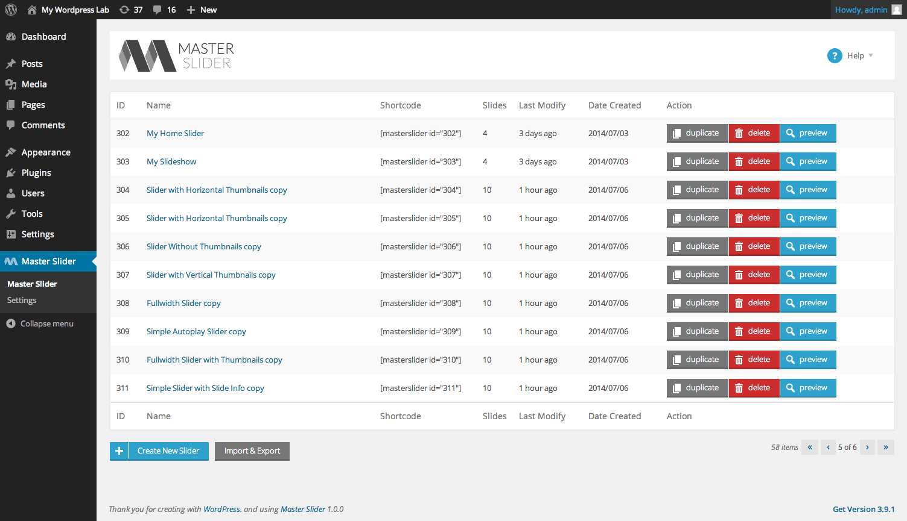
- Now a popup window will be open as shown in screenshot.
- Select slider type and press
CREATE button.
- Your request will be proceed and you will be redirected to MasterSlider's panel page.
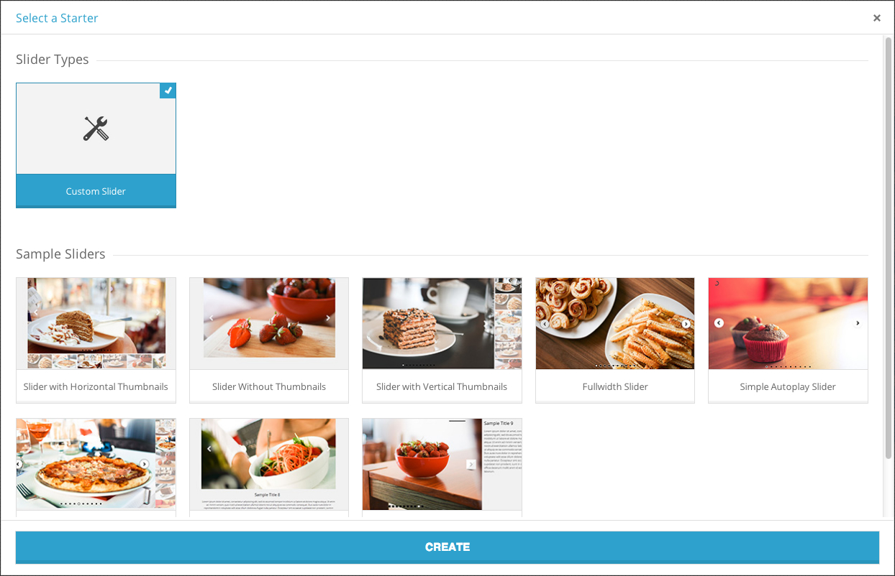
General Settings
- Slider name
- Specifies a name for your slider. It only used in admin area.
- Slider width
- Base width of slider in pixels, slider will resize layers and other elements under this value.
- Slider height
- Base height of slider in pixels.
Note Automatically crop and resize slider images based on above size if it is on.
- Slider sizing method
- The sizing method of slider, with this you can make slider
boxed or fullwidth
- Auto-height Slider
- Whether the slider adapts its height to each slide height.
- Slider wrapper width
- It will set the wrapper width of slider (slider parent) if it leaves empty slider will set it automaticly (Slider uses this to align slider controls).
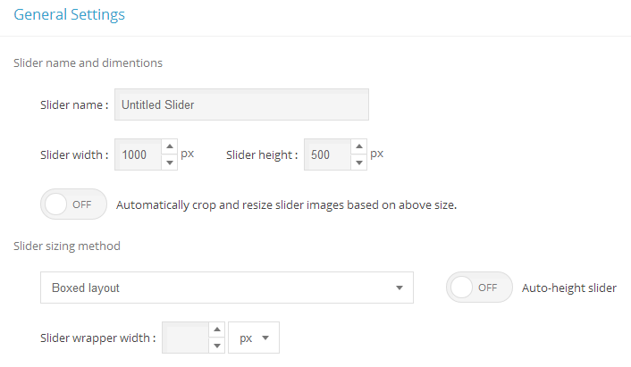
Slider Template and Transition
- Transition
- Specifies the transition of changing slides in slider.
- Transition speed
- The speed amount of changing transition. Higher 50 values are not recommended.
- Direction
- Specifies slide changing direction, It may not supported by some templates.
- Slide space
- The spacing value between slides in pixels.
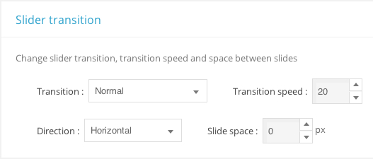
Slider Navigation and Preloading
- Slide show
- Enables the autoplay slideshow.
- Loop navigation
- Enables the continuous sliding mode.
- Pause at the end slide
- Whether the slider pauses slideshow when it reaches to last slide.
- Pause on hover
- Whether the slider temporary pause slideshow on mouse cursor moves over slider.
- Random order
- Whether using random slide ordering.
- Start with slide
- Specifies the fist slide in slider.
- Touch swipe navigation
- Whether the drag/swipe navigation is enabled.
- Mouse swipe navigation
- Whether the user can use mouse drag navigation.
- Use grab cursor
- Whether the slider uses grab mouse cursor while swiping with mouse.
- Mouse wheel
- Enables mouse scroll wheel navigation.
- Slide preloading
- Here you can specify that how slider loads images, it supports three different methods:
Load slides in sequence, Load all slides before init and Load nearby slides which takes the number of current slide's nearby slides that should loads at a same time.
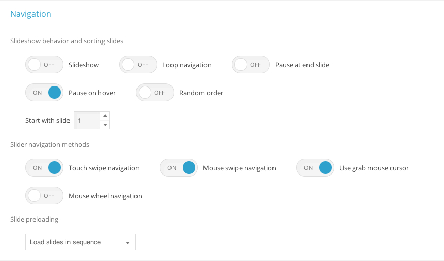
Slider Appearance
- Skin
- Here you can specify the skin of your slider.
- you can take a look at all skins here..
- Align center slider controls
- Whether the slider aligns UI controls to center. This option is only effective in full width mode.
- Background image
- Here you can choose a background image for the slider.
- Background color
- Specifies the background color of slider
- Class name
- Here you can add custom class names to the slider main element. Multiple class names must be separated by white space.
- Inline style
- Here you can add custom CSS style to slider main element. For example
border:solid 1px red;
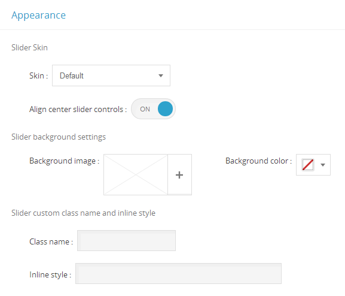
Slides
Here you can see already added slides to the slider, you can add a new slide to slider by clicking on Add Slide
Also you can change the sort of slides by drag and drop each one in this list.
- Remove slide
- You can remove the slide by clicking on icon.
- Duplicate slide
- For creating a duplicate from a slide you can click on icon.
- Show or hide slide
- You can show or hide each slide by clicking on icon. Slider doesn't show hidden slides in front end.
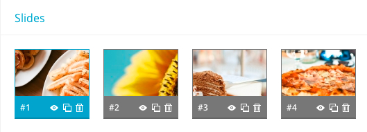
Slide background and thumbnail
- Background
- Specifies current slide background.
- Fillmode
- Specifies the slide background scaling method.
- Thumbnail
- Here you can add a thumbnail for the slide. Please make sure that you have added
Thumblist control to the slider or the selected template supports thumbs.
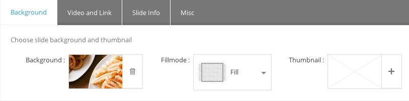
Slide video and link
Here you can add Youtube or Vimeo video as a video slide and also you can make link each slide of your slider.
- URL
- You can set a URL when user click on this slide it links to URL.
- Video embed src
- You can add Youtube and Vimeo src to create an slide for that video.
- Note To find YouTube/Viemo Embed URL you can Open the video in YouTube/Vimeo, play video and right-click on it, select "Copy embed code" then paste the embed code in a text editor, now you can see video embed URL in embed code which specified as iframe src.
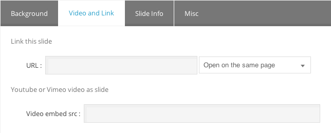
Slide Info
Here you can add caption or any html content as slider info. The content will be appear on each slider base on your configurations in Slide Info control (located under Slider controls tab)
Note You should add "slide info" control in order to see slider info on slider. To do that, click on Slider controls tab, select and add slide info control
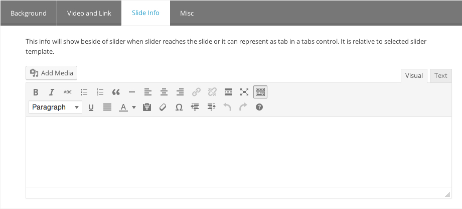
Slide misc
Here you can add custom CSS class or id to each slide and also add alt attribute to slide background image.
- Class name
- you can add a CSS class to slide.
- CSS id
- you can add a CSS id to slide.
- Background color
- It will be used to add color to slide background.
- Alt text
- you can add an alt text attribute to the image in your background of slide.
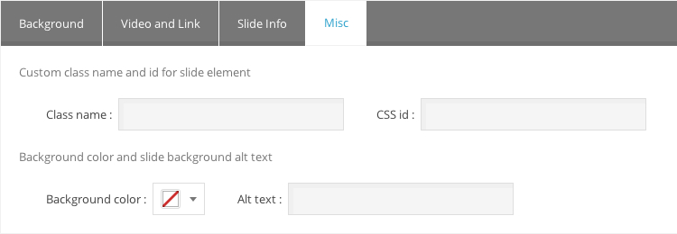
Adding Slider Controls
You can select one type of controller from the dropdown menu and by clicking on it will add to "Used control" list. You can customize each control type by clicking on that.
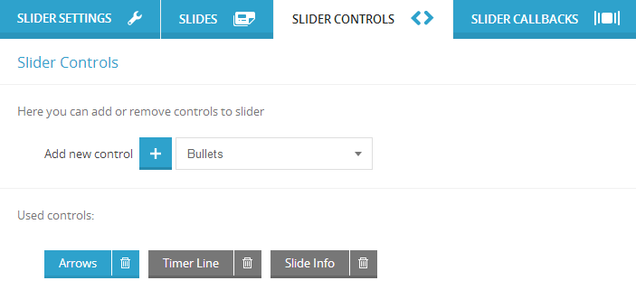
Arrows Control Options
You have the abilities of hiding arrows while mouse is out of slider, showing arrows over videoplayer and hiding arrows in specific size of windows and less than that.
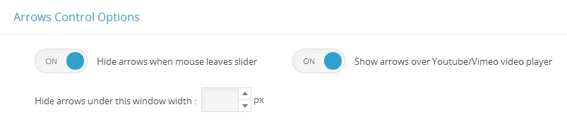
Line Timer Control Options
You have the abilities of hiding line timer while mouse is out of slider, showing line timer over videoplayer and hiding line timer in specific size of windows and less than that.
- Align control
- Specifies the place of line timer.
- Line timer color
- Specifies the color of line timer.
- Line timer width
- Set the width of line timer.
Slide Info Control Options
You have the abilities of hiding slide info while mouse is out of slider, showing slide info over videoplayer and hiding slide info in specific size of windows and less than that. Also you can insert the slide info inside of slider.
- Align control
- Specifies the place of slide info.
- slide info margin
- Specifies the margin for slide info.
- slide info width
- Specifies the width for slide info in pixel.
- slide info height
- Specifies the height for slide info in pixel.
Bullets Control Options
You have the abilities of hiding bullets while mouse is out of slider, showing bullets over videoplayer and hiding bullets in specific size of windows and less than that.
- Align control
- Specifies the place of bullets.
- slide info margin
- Specifies the margin for bullets.
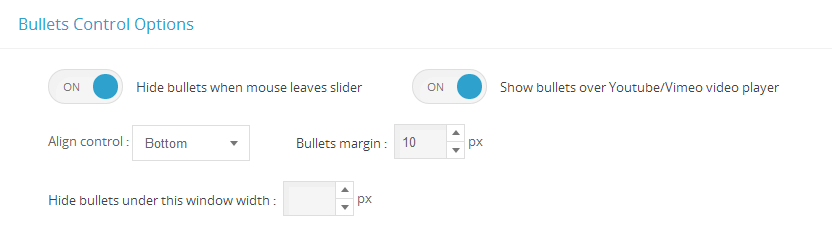
Circle Timer Control Options
You have the abilities of hiding circle timer while mouse is out of slider, showing circle timer over videoplayer and hiding circle timer in specific size of windows and less than that.
- Circle stroke
- Specifies the stroke of circle in pixel.
- Circle radius
- Specifies the radius of circle in pixel.
- Circle color
- Specifies the fill color of circle.
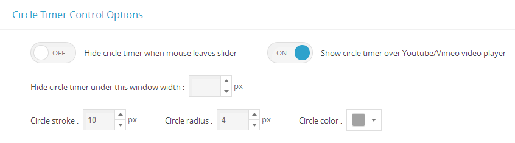
Scrollbar Control Options
You have the abilities of hiding Scrollbar while mouse is out of slider, showing Scrollbar over videoplayer and hiding Scrollbar in specific size of windows and less than that. Also you can insert the Scrollbar inside of slider.
- Scrollbar handle color
- Specifies the color for Scrollbar handle.
- Align control
- Specifies the place of Scrollbar.
- Scrollbar width
- Specifies the width for Scrollbar.
- Scrollbar margin
- Specifies the margin for Scrollbar.
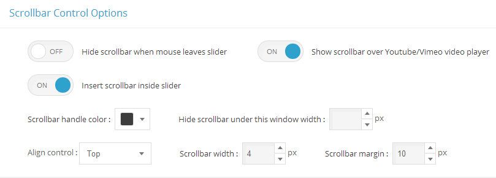
Thumblist/Tabs Control Options
You have the abilities of hiding thumblist/tabs while mouse is out of slider, showing thumblist/tabs over videoplayer and hiding thumblist/tabs in specific size of windows and less than that. Also you can insert the thumblist/tabs inside of slider.
- Thumb background fill mode
- Specifies the background fill mode of thumblist/tabs.
- Align control
- Specifies the place of thumblist/tabs.
- Thumblist/Tabs margin
- Specifies the margin for thumblist/tabs.
- Appearance
- Choose thumblist or tabs.
- Thumblist/Tabs info width
- Specifies the width for thumblist/tabs in pixel.
- Thumblist/Tabs info height
- Specifies the height for thumblist/tabs in pixel.
- Space between thumbs/tabs
- Specifies the the space among thumbs in thumblist mode or tabs in tab mode.
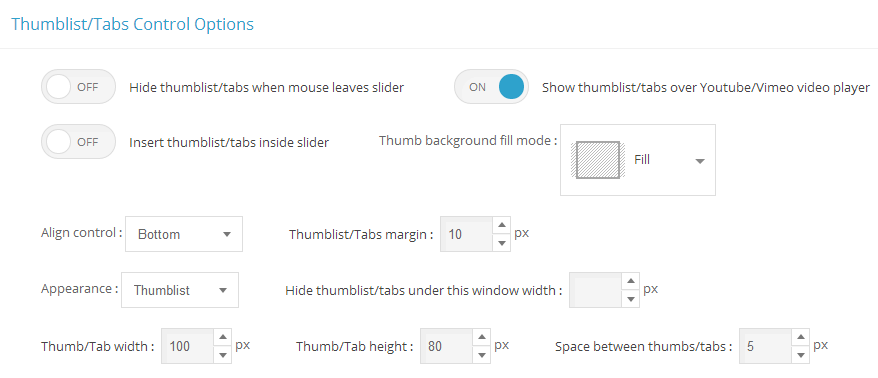
Inserting the slider with shortcode
You can place your sliders into pages and posts with their shortcodes. You can find the shortcode for each slider in Master Slider admin page next to their names in the list view. To insert the slider, edit a page or post and insert its shortcode into the WordPress text editor.
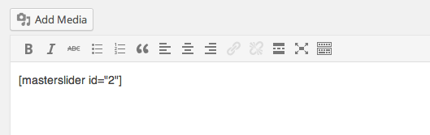
Inserting the slider with the Master Slider WP widget
MasterSlider WP supports widgets, so you can place your slider in your front-end page just by a drag n' drop. To do that, navigate to the Appearance menu on your left sidebar and select "Widgets". Grab the MasterSlider WP Widget and drop it into one of your widget area.
Please note that some themes may not support a widget area what you need. In this case, you can create a new widget area by editing your theme files.
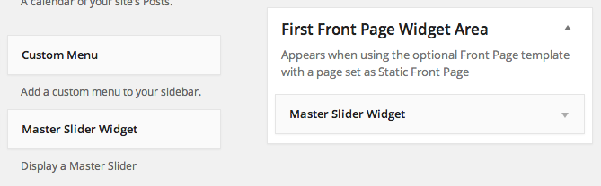
Calling the slider from your theme files
Because a slider can be an integral part of your site, you may want to place it into your theme files. There are some PHP function which you can call for example from the header.php file of your theme and it inserts your slider into your home page or certail other pages. Here they are :
Description
Displays MasterSlider based on the slider id passed to.
Usage :
<?php masterslider ( $slider_id ); ?>
OR
<?php echo get_masterslider ( $slider_id ); ?>
Example :
<?php echo get_masterslider ( 2 ); ?>
Parameters :
- $slider_id
- (int) The slider ID that can be found on the plugin page in the slider list view at the first table column.
- Default: Null
It is important when you want to insert a slider to check its ID on the MasterSlider WP slider list page. When you removes some sliders, their IDs won't be re-indexed and the sequence may broke up. This is important to keep persistent your sliders preventing unwanted changes on the already inserted ones.
Using Slider API and Callbacks
Here you can add or remove callback functions to the slider, first select one type of callback function from the dropdown menu and clicking on to add it to slider. Each callback function is kind of event handler you can add your custom script in the function then slider will execute that when the event dispatches.
Also you can access to the slider api by using "api" variable.
Methods
var api = event.target;
api.index(); // returns current slide index.
api.count(); // returns total number of slides.
api.next(); // next slide.
api.previous(); // previous slide.
api.gotoSlide(4); // moves to 4th slide.
api.pause(); // pauses the slider timer.
api.resume(); // resumes the slider timer.
api.currentTime(); // returns the percentage of elapsed time.
api.destroy(); // removes the slider.
Properties
api.so // returns the object of slider options.
api.view // returns the slider transition object.
api.view.slideList // returns a array of all slides.
api.viwe.currentSlide // returns the current slide object.
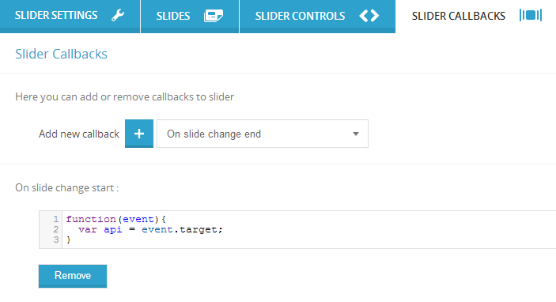
Exporting Sliders:
- Navigate to MasterSlider admin page and click on
Import & Export button.
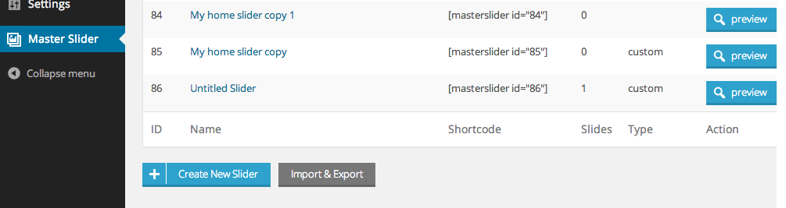
- Now a popup window will be open as shown in screenshot.
- You can select specific sliders to export or select them all in one step and finally press export button.
- Your browser will download an export file containing your sliders once you hit the "Export" button.
- Keep this file at a secure location.
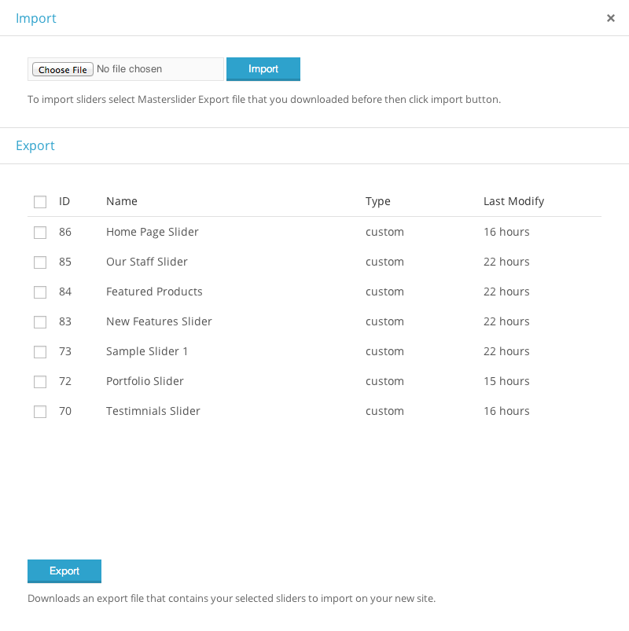
Importing Sliders:
- Use
Choose file button to select the export file you previously downloaded and click the "Import" button. This will bring back your previously exported sliders immediately.
Note MasterSlider won't export the images used in your sliders. Moving sites to different servers should not affect the plugin in any way. However, if you only want to move sliders between sites you need to copy the used images from your /wp-content/uploads/ folder into the same folder on your new installation.
Slider Skins
| |
Name |
Class Name |
| 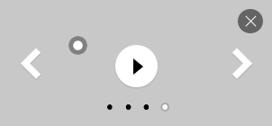 |
default |
ms-skin-default |
| 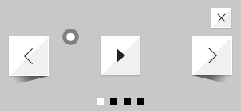 |
Light 2 |
ms-skin-light-2 |
| 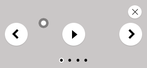 |
Light 3 |
ms-skin-light-3 |
| 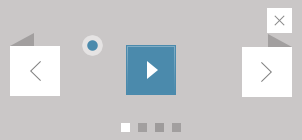 |
Light 4 |
ms-skin-light-4 |
| 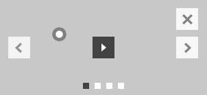 |
Light 5 |
ms-skin-light-5 |
| 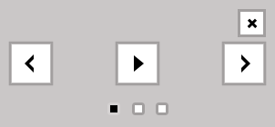 |
Light 6 |
ms-skin-light-6 |
| 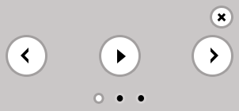 |
Light 6 Round |
ms-skin-light-6 ms-skin-round |
| 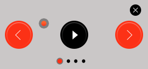 |
Contrast |
ms-skin-contrast |
| 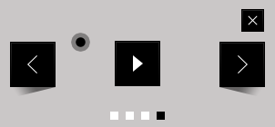 |
Black 1 |
ms-skin-black-1 |
| 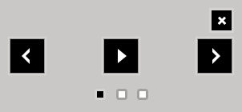 |
Black 2 |
ms-skin-black-2 |
| 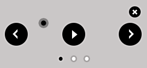 |
Black 2 Round |
ms-skin-black-2 ms-skin-round |
| 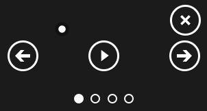 |
Metro |
ms-skin-metro |
Finding YouTube/Viemo Embed URL
Open the video in YouTube/Vimeo, play video and right-click on it, select Copy embed code then paste the embed code in a text editor
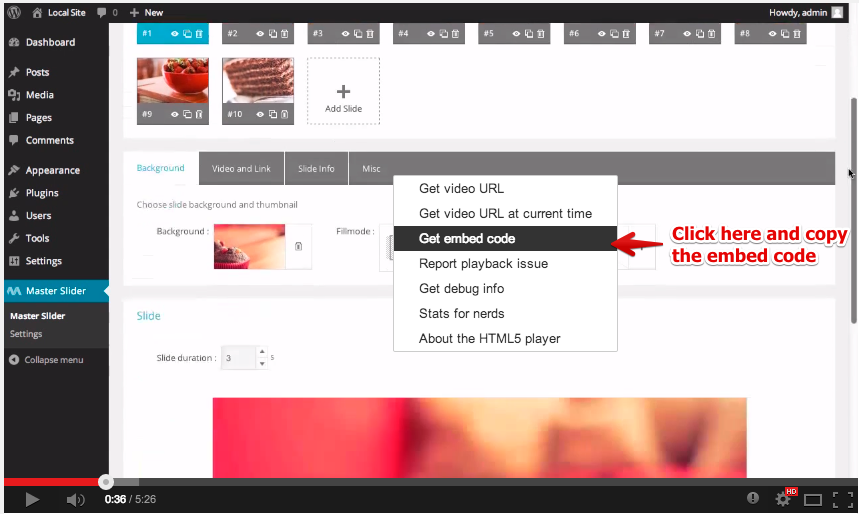
Now you can see video embed URL in embed code which specified as iframe src.
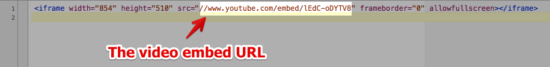
Finally in this example your embed url is : //www.youtube.com/embed/lEdC-oDYTVD
How to translate Master Slider in different languages?
There is two ways of translating Master Slider. Here they are :
1 - Using our online translation service (Recommended way)
You can start translating Master Slider by using our online translation service
2 - Using Poedit app
-
Download Poedit
There are several apps available to help you with translating .PO files. PoEdit is a popular one, and it's available on every major platform. You can download it from here.
-
Start translating
Open the default masterslider.po file from your /wp-content/plugins/master-slider/languages/ folder. When you save your work PoEdit will generate you a .MO file which will be needed to apply your work.
-
Name your files properly
WordPress recognizes your localization by a special formatting of file names. You will need to include the right language and country codes so it can identify what language is your work made for.
For example, a French localization would have the file names: master-slider-fr_FR.po and master-slider-fr_FR.mo. You must follow this syntax, including the dash, underscore, and lower- or uppercase letters.
-
Apply your localization
Copy your newly created .PO and .MO files into the /wp-content/plugins/master-slider/languages/ folder. WordPress should use them immediately if you named your files properly.
Also checkout More detailed article on translating WordPress plugins
I want to rate Master Slider
Please login to your account on WordPress.org and navigate to Plugin's page and rate Master Slider.
Thanks in advance!
Support
If you have any questions please follow these steps:
- Please read item's Documentation
- Take a look in our FAQ page
- Search plugin's support forum using this link for finding already asked or similar questions.
- If you did not find your answer, please post new topic in support forum
Why support forum?
- It is organized and searchable (that makes support easier and faster)
Supporting our Items INCLUDES:
- Responding to questions or problems regarding our item and its features
- Fixing bugs and reported issues
- Providing updates to ensure compatibility with new software versions
Item support does NOT include:
- Customization and installation services
- Support for third party software and plug-ins
Note We CANNOT provide support via email, Please ask your support related questions only in support forum.
Important Note For the fast troubleshooting, please send us detailed informations about the issue and make sure that you don't forget to send us your site url where you are using or want to use the item. Please note, that we cannot troubleshoot from screencast videos or screenshots.
I want to support Master Slider
We don't ask you to donate, instead, if you want to help us please do one of the following:
That helps us alot to continue developing this slider.
Thanks in advance !